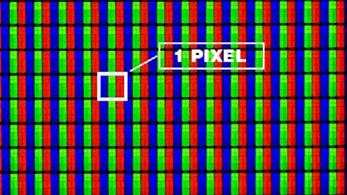

Um pixel é o menor elemento num dispositivo de exibição (por exemplo, um monitor), ao qual é possível atribuir-se uma cor. De uma forma mais simples,um pixel é o menor ponto que forma uma imagem digital, sendo que o conjunto de píxeis formam a imagem inteira. Cada pixel tem interiormente 3 subpíxeis,um vermelho, um verde e outro azul; dependendo do brilho da cada um dos subpíxeis, o pixel adquire uma cor de forma semelhante à composição de cores RGB. Red Green and Blue (RGB) é a abreviatura do sistema de cores aditivas formado por Vermelho (Red), Verde (Green) e Azul (Blue).

O propósito principal do sistema RGB é a reprodução de cores em dispositivos eletrónicos como monitores de televisão e computador, retroprojetores, scanners e câmaras digitais, assim como na fotografia tradicional. Uma pergunta que se surge bastante quando se fala sobre o tópicos das cores num monitor é:
Como se deve organizar os subpíxeis de um monitor?
Costumam-se organizar em linhas verticais, mas para melhorar a sensação de movimento, é melhor organizá-los em diagonal ou em triângulos. O conhecimento do tipo de organização de píxeis, pode ser utilizado para melhorar a visualização de imagens de mapas de bits, um mapa de bit são imagens que contêm a descrição de cada pixel. Outro termo que é muito utilizado no que toca a cores num monitor é:
Profundidade de cor:
a maior parte dos monitores têm uma profundidade de 8 bits por cor (24 bits ao todo), isto é, podem representar aproximadamente 16,8 milhões de cores diferentes. A profundidade de cor é um termo da computação gráfica que descreve a quantidade de bits usados para representar a cor de um único pixel numa imagem bitmap. Este conceito é conhecido também como bits por pixel (bpp), particularmente quando especificado junto com o número de bits usados. Quanto maior a quantidade da profundidade da cor presente na imagem, maior é a escala de cores disponível.
Por fim podemos verificar pela comparação entre as próximas duas imagens, que devido ao facto de os subpíxeis do monitor LCD estarem muito melhor organizados que os subpíxeis do monitor CRT a qualidade da imagem no LCD é muito melhor que no CRT.